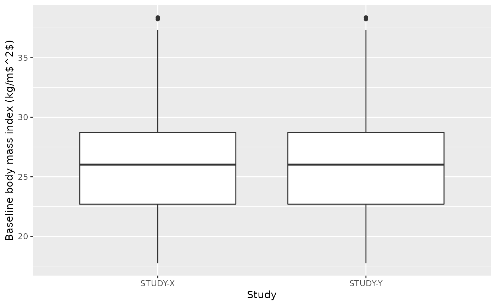
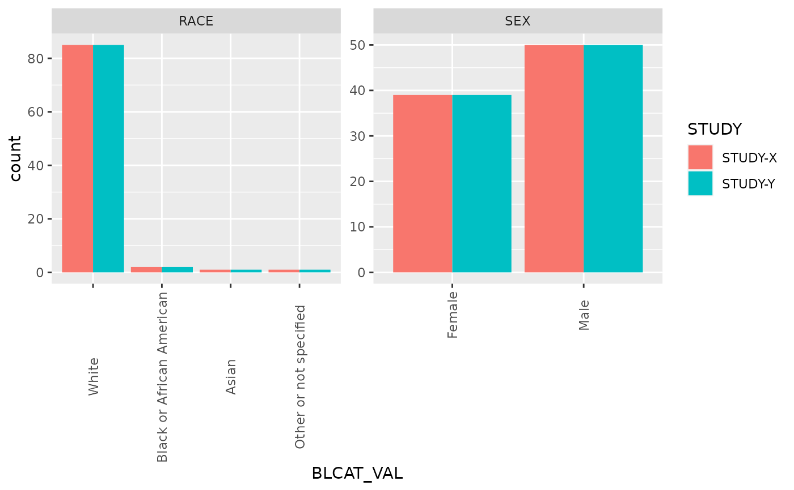
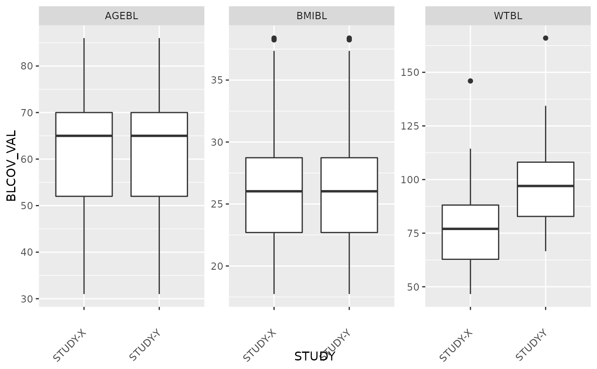

Provide diagnostic summary of an NMTRAN dataset
nm_summary.RdThis function is intended to provide a high level overview of variables derived during a data assembly. The output of this function will provide the user with a pdf file containing a series of tables to help the user better understand distributions within the derived data set.
nm_summary(.data, .spec, ..., .type = "tables")Arguments
- .data
a data frame
- .spec
a yspec object
- ...
arguments passed through from methods (currently none)
- .type
specify desired output of "tables" or "figures". Default is "tables"
Examples
nm_spec <- yspec::ys_load(system.file("derived", "pk.yml", package = "mrgda"))
nm <- readr::read_csv(system.file("derived", "pk.csv", package = "mrgda"), na = ".")
#> Rows: 2534 Columns: 28
#> ── Column specification ────────────────────────────────────────────────────────
#> Delimiter: ","
#> chr (2): ADAT, STUDYID
#> dbl (25): NUM, ID, TIME, TAD, DOSE, DV, DVID, CMT, EVID, AMT, RATE, DUR, MDV...
#> lgl (1): C
#>
#> ℹ Use `spec()` to retrieve the full column specification for this data.
#> ℹ Specify the column types or set `show_col_types = FALSE` to quiet this message.
# To change the output to summary figures instead of tables
nm_summary(.data = nm, .spec = nm_spec, .type = "figures")
#>
#> ── Flags not found in spec
#> • tv_cov_cat
#> Joining, by = "name"
#> Joining, by = "name"
#> Joining, by = "BLCOV"
#> Joining, by = "BLCAT"


#> $`1`

#>
#> $`2`
 #>
#>